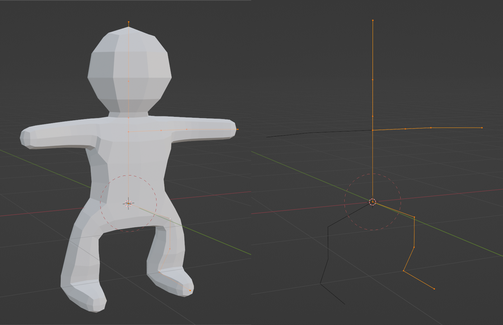
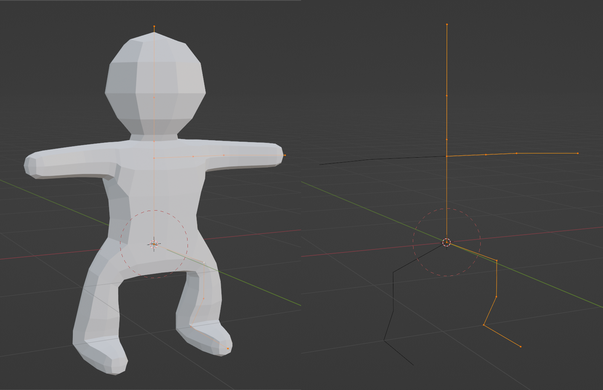

My First Character Models
These are a few of the first things I ever made in Blender. It turns out characters are way harder than hard surface.
Legfish #
Literally the first completed model I ever made in Blender. For this, I used a Skin Modifier and Subdivision Surface based workflow. Joey Carlino has some great tutorials for this on YouTube. A nice starting point, but a bit finnicky.
Cat Knight #
I read the first few chapters of The Animator’s Survival Kit because Mixamo animations look pretty bad on stylized characters, and winging it produced wasn’t working either. I’m never going to be a professional animator, but it’s nice to be able to throw things together for my own use. So this is my first run cycle.
Gobgob #
Because I already had a stylized biped base rigged, I reused that, modeled a new head, and stitched that on. After extruding the ears, I learned a bit about rerouting edge/face flow. I like him a lot.
 
